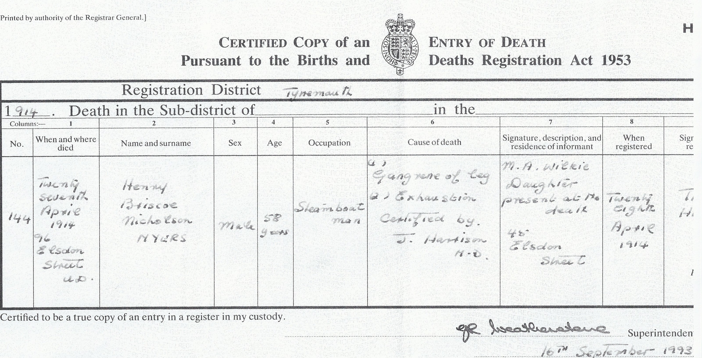
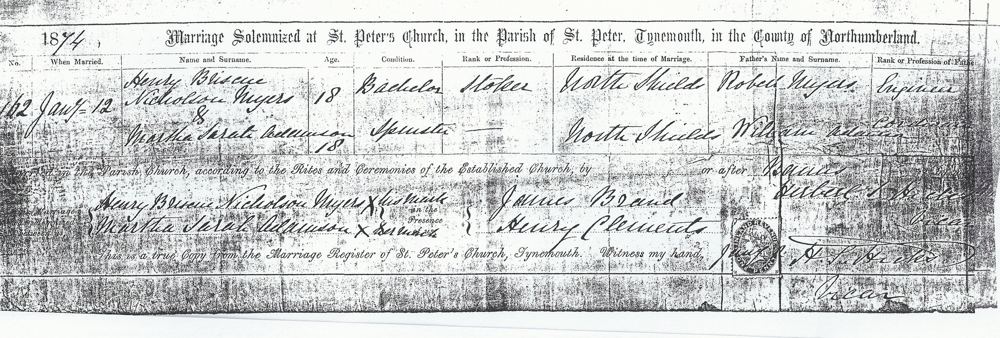
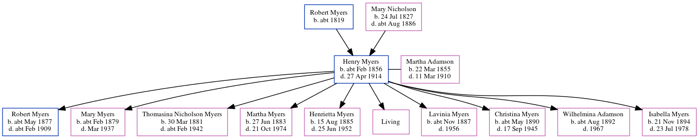

Henry Briscoe Nicholson Myers cFeb 1856 - 1914
[ Home ] | [ Calendar ] | [ Surnames Index ] | [ Census Index ] | [ Family History ]A steamboat man and the child of Robert Myers (an engine man) and Mary Nicholson, Henry Myers was born in Morpeth, Northumberland, England c. Feb 18561,2,3,4,5 and married Martha Adamson (with whom he had 10 children: Robert, Mary Ann Nicholson, Thomasina B Nicholson, Martha Sarah Nicholson, Henrietta Briscoe Nicholson, Susanna Cranmer, Lavinia Clements, Christina Robertson, Wilhelmina White Ridley Adamson and Isabella Jane Nicholson, along with 1 surviving child) at St Peters Church, Tynemouth, Tyne and Wear, England on Jan 12, 18747.
During his life, he was living at North Street, North Shields, Tyne and Wear on Apr 7, 186111; at 2 South Street, North Shields, Tyne and Wear on Apr 3, 18819; at 16 Appleby Street, North Shields, Tyne and Wear on Apr 5, 18911; at 48 Appleby Street, North Shields, Tyne and Wear on Mar 31, 19018; and at 96 Elsdon Street in Tynemouth on Apr 2, 191110when he was living with his daughter Henrietta Briscoe Nicholson, following the death of his wife on Mar 11, 1910 which is where he died on Apr 27, 19146.
Parents
- Robert was born c. 1819
- Mary Ann was born on Jul 24, 1827
Children
- Robert was born c. May 1877
- Mary Ann Nicholson was born c. Feb 1879
- Thomasina B Nicholson was born on Mar 30, 1881
- Martha Sarah Nicholson was born on Jun 27, 1883
- Henrietta Briscoe Nicholson was born on Aug 15, 1885
- Lavinia Clements was born c. Nov 1887
- Christina Robertson was born c. May 1890
- Wilhelmina White Ridley Adamson was born c. Aug 1892
- Isabella Jane Nicholson was born on Nov 21, 1894
Citations
- 1891 England, Wales & Scotland Census - Findmypast (was age 35 and the head of the household)
- England & Wales births 1837-2006 - Findmypast
- Volume: 10B; Page: 130; Line Number: 15; Record set: England & Wales Births 1837-2006; Subcategory: Civil Births; Category: Birth, Marriage & Death (Parish Registers); Collections from: United Kingdom, England;
- Volume: 10B; Page: 265; Line number: 14; Record set: England & Wales Deaths 1837-2007; Subcategory: Civil Deaths & Burials; Category: Birth, Marriage & Death (Parish Registers); Collections from: United Kingdom, England;
- ngdom, England;
- England & Wales deaths 1837-2007 - Findmypast
- England & Wales Marriages 1837-2005 - Findmypast
- 1901 England, Wales & Scotland Census - Findmypast (was age 44 and the head of the household)
- 1881 England, Wales & Scotland Census - Findmypast (was age 26 and the head of the household)
- 1911 Census for England & Wales - Findmypast (was age 55 and the father in law of the head of the household)
- 1861 England, Wales & Scotland Census - Findmypast (was age 5 and the son of the head of the household)
Media
Henry Briscoe Nicholson Myers - death certificate

Henry Briscoe Nicholson Myers and Martha Sarah Adamson - Marriage Certificate

England & Wales deaths 1837-2007 Transcription - BMD-D-1914-2-AZ-000673-014
England & Wales births 1837-2006 - BMD/B/1856/1/LS/000450/015
England & Wales marriages 1837-2005 - BMD/M/1874/1/AZ/000168/184
England Marriages 1538-1973 - R_849486540
1901 England, Wales & Scotland Census - GBC/1901/0032858285
England & Wales births 1837-2006 - BMD/B/1856/4/HP/001003/002
1861 England, Wales & Scotland Census - GBC/1861/0019580316
1881 England, Wales & Scotland Census - GBC/1881/0023805814
Family Tree
Generated by ged2site. Last updated on Jun 11, 2024